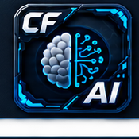

AI Companion
dcc/maya/ai_panel.py — a dockable
natural-language-to-reviewable-Python-script panel (AIPanel,
WINDOW_OBJECT_NAME = "CF_AICompanionWindow") any application
can plug into. Launch it standalone from Utilities > AI
Companion, or have another application open and bind it to its
own curated API (see Embedding in another
app — AnimHub's ClipsAPI integration, documented
fully in ClipsAPI, is the worked example).
This is a shared capability, not a separate autonomous
agent - one panel, reused by every application that wants it, each one
scoping it down to its own domain.
A general-purpose coding assistant with unrestricted access to a live production scene is a genuine risk - it can hallucinate a plausible-looking but wrong API, misuse a real Maya command in a way that silently corrupts data, or simply guess at functionality that doesn't exist. At the same time, forcing every request through hand-written code defeats the entire point of having an assistant.
Split the problem in two. First, a hard process
boundary: the model only ever proposes Python - a human
reads it and clicks Run before anything executes, wrapped in one
undo step. Second, a narrower, complementary boundary: each
embedding application hands the model a small, tested, curated API
scoped to its own domain (plus a short primer on how to use it)
instead of raw cmds - so the common, expected actions go
through a verified path, and the specific correctness traps a model
can fall into by improvising are closed off before they happen.
Every application gets natural-language assistance for free, without writing a single line of AI integration code beyond its own curated API - and every time a new failure mode is found in real use, the fix extends the tested surface rather than hoping different prompt wording holds up next time. See ClipsAPI's documented history for concrete examples of exactly that pattern in practice.
The human review step before Run is the entire safety mechanism - not a sandbox. The curated API is a separate, complementary layer that keeps common actions on a tested path.
The safety model
The model never touches the Maya scene directly:
- You type a request.
- The model returns text only — an explanation plus a proposed Python script.
- You read the script.
- Clicking Run executes it, wrapped in a single Maya undo chunk (so one Ctrl+Z reverts everything it did).
That review step is the entire safety mechanism — there's no
sandboxing or restricted cmds allow-list underneath it. See
ClipsAPI's Safety model section
for the full mechanics (core/ai/execute.py's
run_generated_code) and why a curated API object matters even
though it isn't a hard sandbox boundary.
UI layout
Header
Provider/model status (a small dot + text, same "connected/offline" language as the P4 status bar), and, when the panel has been bound by an embedding app, a green "· Context connected" indicator — generic text, not the embedding app's own name (an earlier pass had it hardcoded as "· AnimHub connected" even when Batch or another app was the one actually bound). This exists specifically so you can tell at a glance whether this particular panel instance actually has the curated API bound. Split across two rows rather than one wide row, specifically so the panel can dock narrow without cropping.
Conversation log
A scrolling transcript (You / AI / System messages), with a faint centered watermark that fades once a real conversation starts.
Proposed Script card
Appears once the model responds with code; read-only code view plus Run (undoable) and Discard buttons. Hidden entirely when there's no pending proposal.
Input row
A multi-line text box (plain Enter sends, Shift/Ctrl+Enter inserts a newline) plus Send and a Settings gear (opens Settings straight to the AI page).
The window can be resized down to 280px wide / 580px tall without cropping — deliberately narrow-dockable, since a Maya dock column is often much narrower than a comfortable floating-window default.
Script History
Opened via the Script History button in the header. Records every script actually executed (Run clicked, or Re-run from this dialog) — not scripts that were only proposed and then Discarded, and not just successful ones either, since a failed attempt is often exactly what's worth studying later.
Persistent across Maya sessions, not session-scoped
— reverted from an earlier in-memory-only design once it became clear
that losing everything the moment the panel closed made it useless as a
"what did I actually run last week" reference. Backed by
core/ai/script_history_store.py: a plain append-only JSON
Lines file in a local per-user data directory (the same convention the
application log file uses). JSON Lines specifically because it needs
only an O(1) file append for a
new entry (no read-modify-write of a whole array), and a single
malformed/truncated trailing line (e.g. Maya closing mid-write) doesn't
lose every entry before it.
Each entry: timestamp, the original request text, the model's explanation, the code, whether it succeeded, and the failure message if not.
Per-entry actions:
- Copy Code / Re-run (re-executes through the
same
run_generated_codepath, recording a new history entry). - Right-click Copy Prompt — copies just the original request text for that entry (distinct from Copy Code), handy for re-asking a variant of an old prompt.
- The list supports multi-select (Ctrl/Shift-click); right-click with more than one row selected shows Delete Selected (N) instead of Copy Prompt, removing the selected entries from both the in-memory list and the on-disk store (a full rewrite of the JSONL file, the only operation the store supports besides append).
- A search box above the list filters by request text, explanation, or code as you type, preserving the current selection across both typing and a live refresh (e.g. a new entry landing mid-search from a Re-run) rather than resetting the filter.
Embedding in another app
AIPanel.__init__ accepts three optional hooks, and
set_context() lets an embedding app rebind them
after construction — necessary because show_dockable()
reuses an already-open panel instead of reconstructing it, so a
constructor-only kwarg would only ever take effect on the very first
launch:
def _on_ask_ai(self):
window = ai_panel.show()
if window is None:
window = dcc_ui.find_dockable_instance(ai_panel.AIPanel)
if window is not None:
window.set_context(
context_provider=self._ai_context_summary,
extra_namespace_provider=lambda: {"clips": ClipsAPI(self.clips)},
on_run_complete=self._rebuild_rows)context_provider— a zero-arg callable returning a plain-text "concepts primer" sent alongside every request. This is where you document your curated API's real method names, correct usage, and any disambiguation the model needs — see ClipsAPI's concepts primer section for three real bugs this mechanism exists to prevent.extra_namespace_provider— a zero-arg callable returning a dict merged into the exec namespace on top ofcmdswhen running generated code. This is the actual capability boundary (see The safety model) — whatever you put here is what the AI can call.on_run_complete— a zero-arg callable invoked after a successful run, so the embedding app can refresh its own UI state.
clips.create(...)
genuinely succeeding (confirmed by re-querying clips.list())
while the newly created clip never appeared in AnimHub's row list,
because on_run_complete had been accepted by the constructor
but never actually wired through set_context() until this was
fixed. If you embed the panel, always pass this, even if your data
model looks like it "just updates automatically" — it doesn't,
unless something explicitly asks the UI to rebuild.
All three default to None and are safe to omit — a plain,
unbound AIPanel runs in "Full Scene" mode: just cmds,
no context primer, no completion hook.
Provider / API key setup
Settings >
AI (or the gear icon in the panel header) configures the
provider (Anthropic / OpenAI / Gemini), model, and API key. Keys are
stored in the OS keychain via core/ai/key_storage.py, never in
a config file. If no key is set when you send a request, the panel
prompts for one inline; keyring must be installed in Maya's
Python for this to work at all (mayapy -m pip install keyring
if the panel reports it's missing).